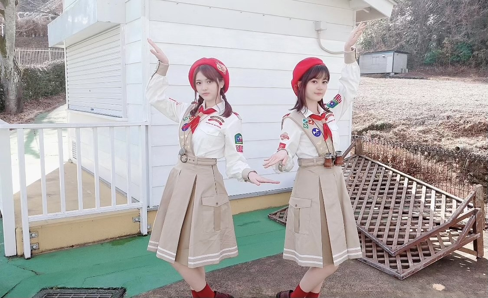

2021/0212Friからあげ姉妹MVゲットだぜっ(o・・o)
松村沙友理です
オンラインミート＆グリートありがとうございました！
みなさんと顔をあわせてお話しできるのが久しぶりだったけど
本当に本当に楽しかったです♡
お話しできて幸せだったな〜
次は３月！！
楽しみにしていますね〜♡
あ、そういえば
ツインテールやってーと言われたので
本当に久しぶりにツインテールしました♡笑
はずかしくてなかなかやらなかったけど
やったら楽しくなっちゃいました〜！
またどこかでやろ〜っと♡
そしてなんと
からあげ姉妹による「1.2.3」のMVが
公開されました〜♡
実は密かに撮影していたんですっ♡
本当に本当に可愛い作品をつくって頂きました。
このMVが好きすぎて
生田絵梨花ちゃんと二人で沢山みました^ ^
MVの監督さんは
からあげ姉妹をずっと担当してくれている
月田茂さんです♡
無表情からの繋がりもあるので無表情も見てほしい！！笑
無表情もいいMVなんだ〜♡
あとあとあと！ピカチュウも登場しています！
凄いです！ずっと可愛い！！！
本当に素敵な作品っ！
テレビアニメ「ポケットモンスター」は
テレビ東京系にて
毎週金曜日よる６時55分から放送中です！
MV可愛いからたくさんみてほしいなぁ♡


2021/02/12 20:25


コメント(610)
ミーグリもサイン会もお疲れ様っ。
もちろんMV見たよっ。
楽しかったなー。
123もみたよ〜！
焼きそばパン ライスカレー たくあん フライドチキンって出てきたの感動した！
ライブで披露して欲しいな〜なんて思ったり……
SHOWROOMで言ったMV作成の夢が叶ったから、Mステに出る、CDTVに出る夢叶えようね！
私は中高一貫校の中学に通ってるんだけど、高校の野球部が春の選抜甲子園に出るんだ〜
桐蔭とも戦うかも？
来週テストがあるから、沙友理ちゃん見て頑張ります！
ずっとずっと大好きです︎ ︎
MV叶ったね！
ツインテール神
前髪あげるのも可愛い
2人がずっと無表情な所とか登場する独特なキャラクターが
じわじわ来て凄く面白かったです！
ダンスも凄いかわいかった！
腕をブンブン回してるいくちゃんを目で追ってる所とかめちゃくちゃ可愛かったし、各所に散りばめられたからあげ姉妹ポーズもめっちゃいいと思いました！
いつか歌番組とかライブとかで披露して欲しいです！！
めっちゃ可愛かったです❤️
改めて、昨日はミーグリありがとうございました！
久しぶりに松村さんとお話しできて本当に幸せでした…
松村さんのことをますます好きになっちゃいました
ツインテール可愛すぎます〜(*´-`)
3月のミーグリも楽しみにしています♡
そして、「1・2・3」のMV観ました〜♪
歌声もダンスもお二人も可愛すぎて…
「無表情」の要素もたくさんあって、からあげ姉妹ファンとしても最高のMVです〜！
大変な時もこの曲を聴けば、このMVを観れば、笑顔になれると思います。
元気の源です。本当にありがとうございますm(_ _)m
月田茂監督にまたまた感謝ですね♪
「焼きそばパン・ライスカレー・たくあん・フライドチキン」のコールしたくなっちゃいました。笑
これからも忙しい期間が続くと思うので、体調にお気をつけ下さい！
松村沙友理さんが屈託のない笑顔でいられますように…。
これからも応援しています！
いつも幸せをありがとう〜(*´ー｀*)
何回もみます！
ツインテールも可愛い！
沙友理ちゃん最高！(o・・o)
ミーグリ参加出来なかったけど色んな人の感想を聞いてより一層のメンバーのみんなに会いたくなりました/////
今は受験までラストスパートなので合格してひと段落着いたらまた乃木坂46の応援を今まで以上にするね☺︎
ツインテールばか可愛い！どんなまちゅも大好きだけど、久しぶりに見たツインテールでやられました♡ありがとう！
そして、、、1.2.3のMV公開おめでとうございます
1ヶ月ほど前かな？SHOWROOMでからあげ姉妹で叶えたい夢を沢山言ってくれた中の一つが叶ったこと、私もとっても嬉しいです(〃▽〃)
夢は口に出せば、行動に出れば叶うってからあげ姉妹の2人に改めて教えられた気がします。
最初から最後まで永遠に可愛くて、ずっとこの時間が続いて欲しいって思ってた♡笑
無表情の振りが入ってたり、月田さんだからこそ引き出せたからあげ姉妹の魅力が詰まってて嬉しかったです！
色んな方に見てもらいたいね！私も拡散します笑
この先も2人の笑顔がたくさん見れますように。
乃木坂46の笑顔がたくさん見れますように！
いつもありがとう
まちゅ大好きです♡
ばいばいっ！
M V見たよ！とても可愛かったです❤️ピカチュウも出てきてびっくりした‼️
今日は、嬉しいお知らせがあるよ！
実は高校受験1校目受かったよ！
今日発表だった！
乃木坂46の曲聴いて頑張ったよ！ありがとう
これからも応援してるよ 大好き❤
ツインテール可愛すぎる…
MVも見ました！
無表情の後の笑顔が言葉に表せないぐらい最高でした！そして2人とも可愛すぎました。。。
1部でめっちゃ緊張しててさゆりちゃんの顔見たら泣きそうになってでもずっと練習してたから頑張って「ツインテールしてほしいです」って言えたこともう今となってはめっちゃ自分頑張ったな〜って（）wwさゆりちゃんのツイン姿、ほんとに世界で1番可愛かったです♡また3月楽しみにしてるね♡ほんと大好き！！！！！！！♡姫！！！！！！！♡
1枚だけだったけどツインテール見られて沙友理ちゃんの対応が素敵すぎてにやけました。幸せでした！！
わがままなんですけど、ライブでもツインテールが見たいです！！！
ツインテールの破壊力ったら物凄い！！！
色々あって、ミーグリ参加出来なかったよー(T＿T)
ごめんねぇーー久しぶりにお話したかったんだけどなぁ
また会える日がくるのかなあ？楽しみに待っときますね！
大好きだよ！いつもありがとう！
MV見たよ
最高だったよ
ツインテールすごくお似合いです。めちゃくちゃ可愛いです。
そしてMV公開おめでとう。もうたくさん見ました！
無表情なのもたくさん食べてるのもピカチュウも、全部全部可愛かったです。そしてなにより2人のきらきら笑顔が大好きでした。
楽しそうなお二人を見られて幸せです。いつもほんとにありがとう。からあげ姉妹は最強の姉妹です！！
1.2.3MV待ってました！！内容も凝ってて面白いし沢山見ます
MVたっっくさん見るね♡
最強ですーーー！
MV見ました！めぇーっちゃくちゃ可愛かったです！からあげ姉妹最高!!!
早速1.2.3のMV見たよ。
さゆりんもいくちゃんもピカチュウもみんな可愛くて見ていて幸せになる作品だったよ。
無表情との繋がりもファンには嬉しい限りです。
次は音楽番組で二人の姿が見れたら嬉しいな。
本当に素敵な作品をありがとう。
MV本当に本当に可愛くて可愛くて尊死でした、
MステとかCDTVとか出れるといいなぁ〜、楽しみにしてます︎︎☺︎
3/6のミーグリ当たったら参加するのでまたツインやってほしい！！
沙友理ちゃん大好きだよ〜( ᷇࿀ ᷆ )♡
ツインテールめっちゃ可愛い〜
MVも可愛いかったよ！
可愛いの大渋滞〜〜♡♡♡♡♡
大好きだよ！！
沙友理ちゃんのファンになってよかったです！ありがとうございます♪大好きな沙友理ちゃんのツインテールが可愛くて可愛くて最高でした！！！また是非してくださいね
そして、からあげ姉妹の1・2・3のMV！すごくすごく可愛くて楽しくて最高ですヽ(´▽｀)/何度も観てしまいます
沢山の方に観てもらいたいので宣伝しますよ〜！
まっつんツインテール似合ってる！
『1.2.3』のMV観たよーーー！！
2人ともめちゃくちゃ可愛い♡♡♡
放送で初めて聴いた時から、まちゅの可愛い声といくちゃんのキレイな声の相性バッチリだなって思ってました(o^^o)
歌番組で披露して欲しいな♫
これからもずっとずっと応援してます！
大好き♡
またね。
MVたくさん観ますね！！！
この曲だぁーーいすきです！♫
あと！
らじらー聴いてましたよ〜♡
にこにこ〜！のコーナーで、メッセージ採用されて嬉しかったです！
一人暮らししてて、家族に会えなくて寂しい〜って言ってた人です！
あの後、家族とテレビ電話しました♫
色々、さゆりちゃんに救われました！
ありがとうございます！
これからもずっとずっと大好きです！
あきかより
可愛すぎて３回連続で観ちゃった。
やっぱりからあげ姉妹は無表情で焼きそばパン、ライスカレー、たくわん、フライドチキンをたべるんだね！
そこから笑顔になったときのギャップにいつもやられちゃいますー！！
MVいっぱいいっぱい観るね！！
来週のフルバージョンリリースも楽しみにしているよ！！
体調に気を付けて頑張ってください！
からあげ食べて応援してます。
大好き
MVおめでとう
コメントする